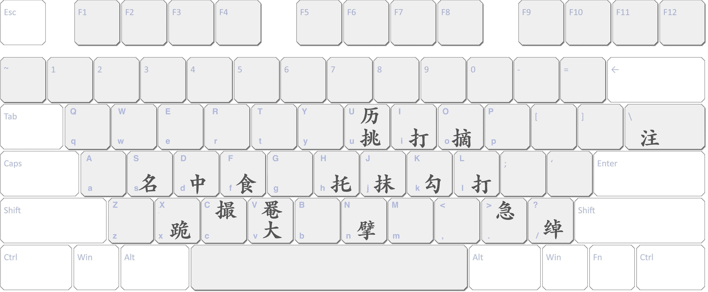

Try it
Examples
s7ju5 s7>k5 0k3 k3 v56V5 s9c C03|s65 v7U43 v85banlun7 :shang,5,1 #jin
名七抹挑五 名七急勾五 散勾三 勾三 大五六掩五 名九掐起 撮散三|名六五 大七历四三 大八五半轮七 ：上五一 #进
名七抹挑五 名七急勾五 散勾三 勾三 大五六掩五 名九掐起 撮散三|名六五 大七历四三 大八五半轮七 ：上五一 #进
[[[s7ju5 s7>k5 0k3 k3 v56V5 s9c C03|s65 v7U43 v85banlun7 :shang,5,1 #jin]]]
Documentation

1: Left Hand
| ASCII | 中文 | 拼音 | output |
|---|---|---|---|
| s | 名 | míng | [[[s]]] |
| d | 中 | zhōng | [[[d]]] |
| f | 食 | shí | [[[f]]] |
| v | 大 | dà | [[[v]]] |
| x | 跪 | guì | [[[x]]] |
| ASCII | 中文 | 拼音 | output |
|---|---|---|---|
| V | 掩 | yǎn | [[[V]]] |
| c | 掐起 | qiā qǐ | [[[c]]] |
preface these with
# and best use Chinese characters to avoid ambiguity with homonym pinyins | ASCII | 中文 | 拼音 | output |
|---|---|---|---|
| #daiqi | #带起 | dài qǐ | [[[#带起]]] |
| #duiqi | #对起 | duì qǐ | [[[#对起]]] |
| #zhuaqi | #抓起 | zhuā qǐ | [[[#抓起]]] |
| #pieqi | #撇起 | piē qǐ | [[[#撇起]]] |
| ASCII | 中文 | 拼音 | output |
|---|---|---|---|
| / | 绰 | chuò | [[[/]]] |
| > | 急 | jí | [[[>]]] |
| \ | 注 | zhù | [[[\]]] |
preface these with
# and best use Chinese characters to avoid ambiguity with homonym pinyins | ASCII | 中文 | 拼音 | output |
|---|---|---|---|
| #tui | #退 | tuì | [[[#退]]] |
| #jin | #进 | jìn | [[[#进]]] |
| #fu4 | #復 | fù | [[[#復]]] |
| #zhuang | #撞 | zhuàng | [[[#撞]]] |
| #yin | #吟 | yín | [[[#吟]]] |
| #nao | #猱 | náo | [[[#猱]]] |
| #changyin | #长吟 | cháng yín | [[[#长吟]]] |
| #xiyin | #细吟 | xì yín | [[[#细吟]]] |
| #dingyin | #定吟 | dìng yín | [[[#定吟]]] |
| #fenkai | #分开 | fēnkāi | [[[#分开]]] |
| #yinghe | #应合 | yìng hé | [[[#应合]]] |
2: Right Hand
| ASCII | 中文 | 拼音 | output |
|---|---|---|---|
| n | 劈 | pī | [[[n]]] |
| h | 托 | tuō | [[[h]]] |
| j | 抹 | mǒ | [[[j]]] |
| u | 挑 | tiǎo | [[[u]]] |
| k | 勾 | gōu | [[[k]]] |
| i | 剔 | tì | [[[i]]] |
| l | 打 | dǎ | [[[l]]] |
| o | 摘 | zhāi | [[[o]]] |
| ju | 抹挑 | mó tiǎo | [[[ju]]] |
| ki | 勾剔 | gōu tī | [[[ki]]] |
| lo | 打摘 | dǎ zhāi | [[[lo]]] |
| ASCII | 中文 | 拼音 | output |
|---|---|---|---|
| C | 撮 | cuō | [[[C]]] |
| U | 历 | lì | [[[U]]] |
| lun | 轮 | lún | [[[lun]]] |
| banlun | 半轮 | bàn lún | [[[banlun]]] |
| TT | 双弹 | shuāng tán | [[[TT]]] |
| TTT | 三弹 | sān tán | [[[TTT]]] |
| B | 拨 | bō | [[[B]]] |
| L | 剌 | là | [[[L]]] |
| BL | 拨剌 | bō là | [[[BL]]] |
preface these with
# and best use Chinese characters to avoid ambiguity with homonym pinyins | ASCII | 中文 | 拼音 | output |
|---|---|---|---|
| #dayuan | #打圆 | dǎ yuán | [[[#打圆]]] |
| #gun | #滚 | gǔn | [[[#滚]]] |
| #fu | #沸 | fú | [[[#沸]]] |
3. General Symbols
Preface with # to write the character by itself. Best use Chinese characters to avoid ambiguity with homonym pinyins.
3b: Related to Notes
| ASCII | 中文 | 拼音 | output |
|---|---|---|---|
| #fan | #泛 | fàn | [[[#泛]]] |
| #zhi | #止 | zhǐ | [[[#止]]] |
| #qi3 | #起 | qǐ | [[[#起]]] |
| #fanqi | #泛起 | fàn qǐ | [[[#泛起]]] |
| #fanzhi | #泛止 | fàn zhǐ | [[[#泛止]]] |
| #ru | #如 | rú | [[[#如]]] |
| ASCII | 中文 | 拼音 | output | #1..#10 | #一..#十 | [[[#3]]] [[[#5]]] [[[#8]]] |
|---|---|---|---|
| #wai | #外 | wài | [[[#外]]] |
| #san, #0 | #散 | sǎn | [[[#san]]] |
| #ban | #半 | bàn | [[[#ban]]] |
| #shang | #上 | shàng | [[[#shang]]] |
| #xia | #下 | xìa | [[[#xia]]] |
3e: related to expression
| ASCII | 中文 | 拼音 | output |
|---|---|---|---|
| #daxi | #大息 | dà xī | [[[#大息]]] |
| #shaoxi | #少息 | shǎo xī | [[[#少息]]] |
| ASCII | 中文 | 拼音 | output |
|---|---|---|---|
| #* | [[[#*]]] |
4. Vertical Characters
Preface with : and split characters with , or each character/letter will be split in its own line. You can use any characters that are in the standalone character set, but the font is optimized to display vertically for: 1-10 (一到十), 0 (散), wai (外), shang (上), xia (下), gun (滚), fu (沸), dao (到), ru (如).
| ASCII | output |
|---|---|
| ：上五六 ：上56 :shang,5,6 | [[[：上56]]] |
| ：下十一 :xia,10,1 | [[[:xia,10,1]] |
| ：散滚沸 :0,gun,fu :san,gun,fu | [[[：散滚沸]]] |
| ：至五 :zhi4,5 | [[[:zhi4,5]]] |
| ：如一 :ru,1 | [[[:如一]]] |
Contact me if you want more characters or glyphs added to the font, or if you want to collaborate.
Code open source on https://github.com/neuralfirings/JianZiPu